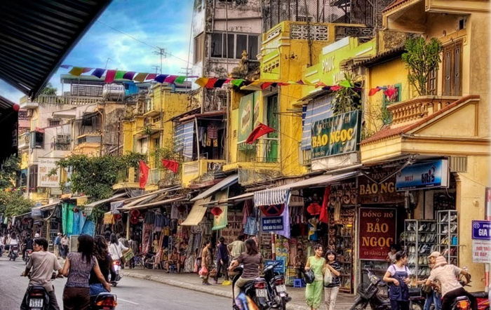
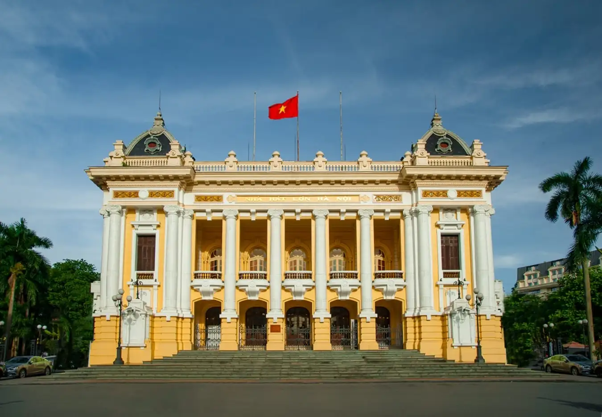

Nestled within the bustling heart of Hanoi, the Old Quarter stands as an enchanting labyrinth of narrow streets, ancient architecture, and vibrant traditions. This captivating district, encompassing an area of approximately 100 hectares and comprising 76 bustling streets, has captivated visitors for centuries with its rich cultural heritage and captivating atmosphere.
Majestically perched atop a serene islet in the heart of Hanoi's iconic Hoan Kiem Lake, Turtle Tower (Tháp Rùa) stands as a captivating landmark, steeped in rich history and captivating symbolism.This iconic structure has become an inseparable emblem of Hanoi, revered for its spiritual significance, intertwined with the legendary tale of King Le Loi returning his magical sword to the divine Turtle God, Kim Quy. The tower's presence exudes an aura of tranquility, beckoning visitors to seek solace amidst its serene ambiance.

The construction of the opera house commenced in 1901 under the supervision of the French colonial administration. The design was entrusted to a team of renowned architects, including V. Harley, Francois Lagisquet, and Ho Thieu Tri, who drew inspiration from the Palais Garnier in Paris, the most celebrated opera house in the world.Today, the Grand Opera House of Hanoi stands as an enduring symbol of Hanoi's cultural heritage and architectural prowess.
Nestled amidst the heart of Hanoi, Vietnam, the Ho Chi Minh Mausoleum stands as a solemn tribute to the revered national leader, Ho Chi Minh. This majestic structure, often referred to as "Lăng Bác" by locals, serves as the final resting place of the revolutionary figure who dedicated his life to the liberation and unification of Vietnam. The Ho Chi Minh Mausoleum has become a poignant symbol of the Vietnamese people's unwavering love and admiration for their esteemed leader. Each year, millions of domestic and international visitors flock to pay their respects at the sacred site, seeking inspiration from the life and legacy of Ho Chi Minh.